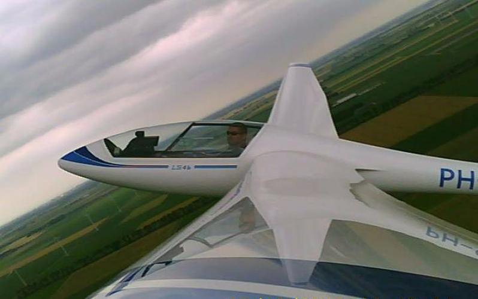

Na minimaal 20 starts op de Junior kun je overlessen naar de LS4-b. Dit is het vliegtuig voor gevorderde solisten én natuurlijk GPL-houders. De meeste leden maken hun eerste overlandvlucht met dit toestel.
| Registratie | Callsign | Bouwjaar | Spanwijdte | Lengte | leeggewicht | Overtreksnelheid | Maximum Snelheid | Beste Glijgetal | Aerobatics |
|---|---|---|---|---|---|---|---|---|---|
| pH-974 | YS | 1992 | 15 Meter | 6,83 meter | 238 Kg | 65 Km/h | 280 Km/h | 40 (bij 105 Km/h) | Alle Manoeurvres |